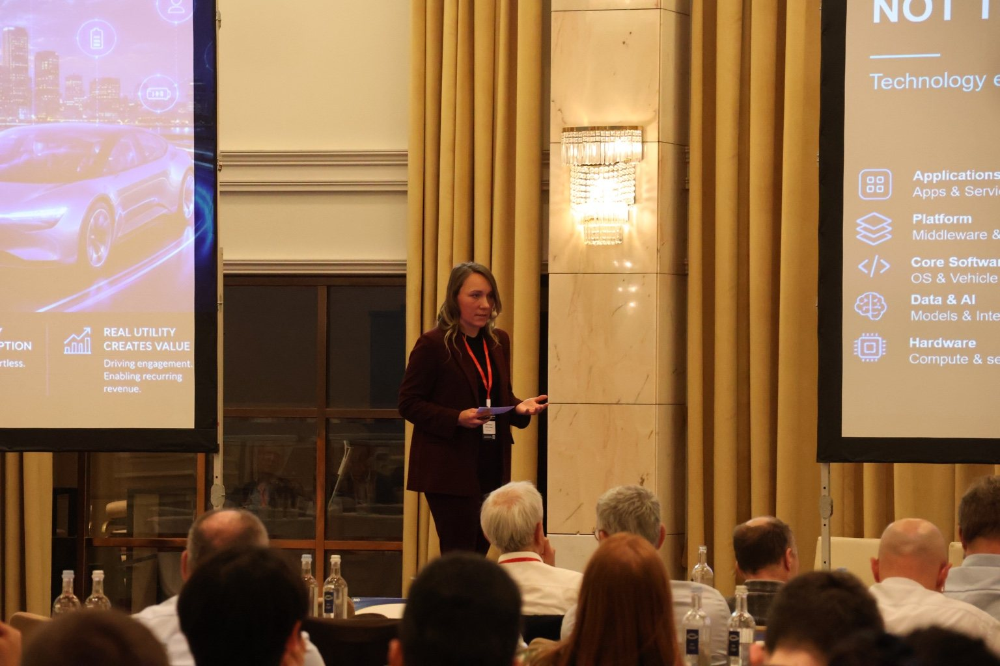
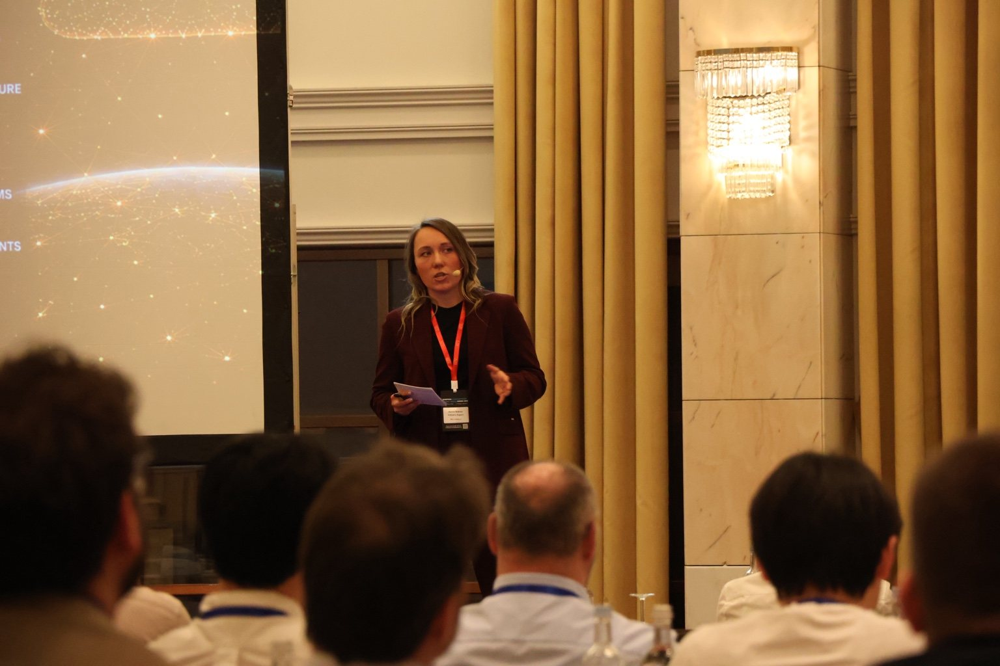
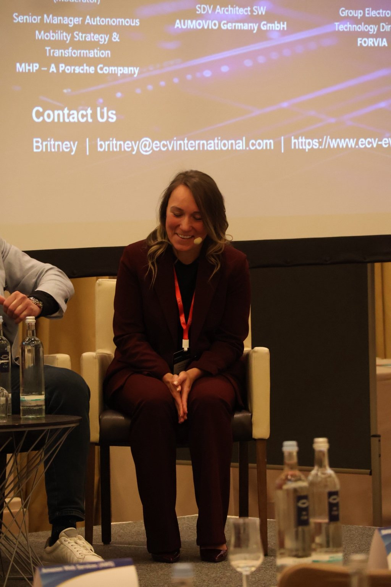
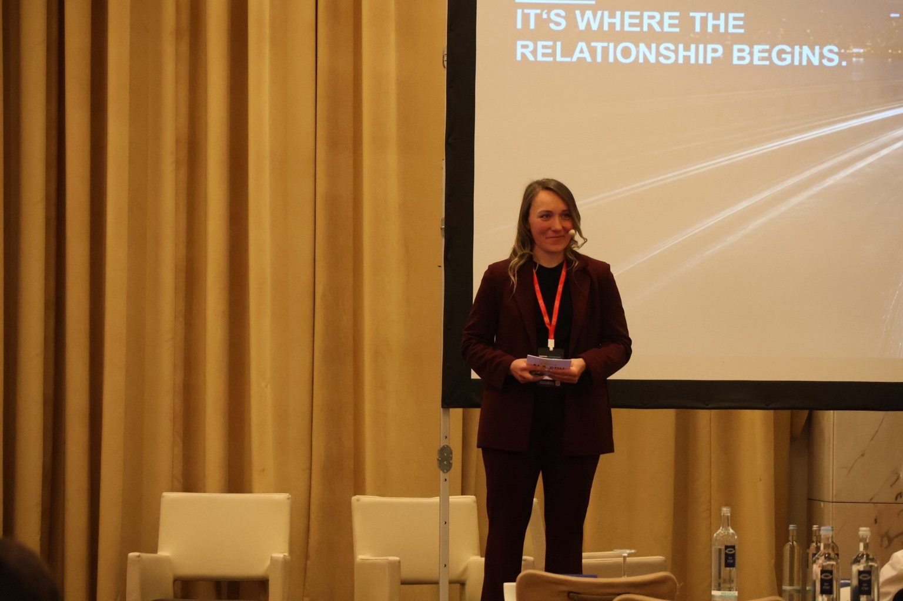

01
SDV is the foundation, not the product.
The technology stack enables the experience. The experience defines the brand.
From platform strategy to real customer value.
The keynote explored how the automotive benchmark has shifted from another vehicle to the best digital experience customers have anywhere.
Its central argument: software-defined vehicle architecture is essential, but it is not the customer-facing product. Value emerges when architecture, AI, services and ecosystem partners work together to create simplicity, utility and adoption.
The presentation concluded that the vehicle is no longer the finish line — it is where the customer relationship begins.
The technology stack enables the experience. The experience defines the brand.
Protect customer experience, domain intelligence and orchestration. Partner where scale matters.
Perceive, understand, predict and act — with privacy, reliability and customer control built in.
Availability does not equal value. Real impact begins when customers discover, try and repeatedly use a capability.
“Invisible complexity only matters if it creates visible simplicity.”




Keynotes, executive panels and moderation across AI, SDV, leadership and high performance.